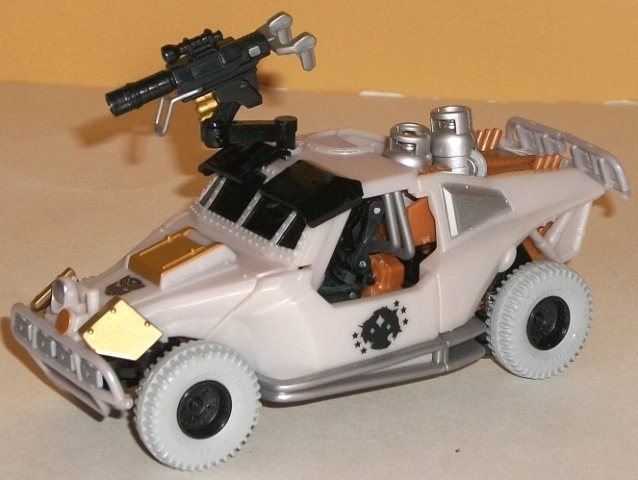
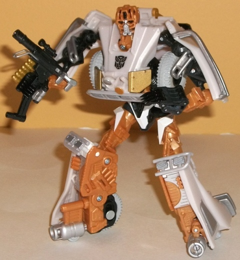
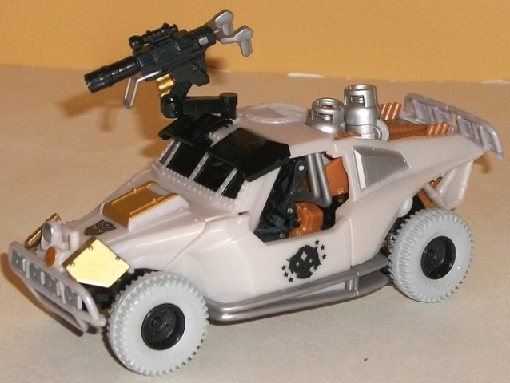
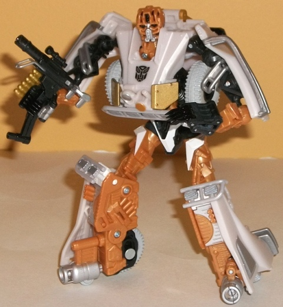
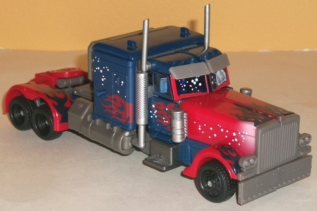
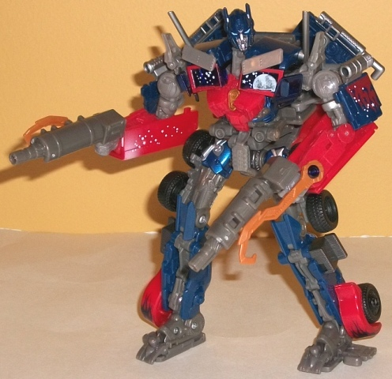

 
Allegiance : Autobot
Size : Deluxe
Difficulty of Transformation : Easy
Color Scheme : Glittery pearly white, black, light milky brownish orange, and some silver, metallic gold, white, and glossy off-white
Individual Rating : 9.4
Set Price : $18 U.S.
(NOTE: Because this set is composed of repaints,
this is not a full-blown review. This mainly covers any changes made to
the set and the color scheme, and merely compares it to the original versions
of these molds. For a review on TF1 Landmine, the mold used for Comettor,
go
here
. For a review on the Autobot Alliance
Battle Blades Optimus Prime mold, go
here
.)
 Comettor
Comettor


Allegiance
: Autobot
Size
: Deluxe
Difficulty of Transformation
: Easy
Color Scheme
: Glittery pearly white,
black, light milky brownish orange, and some silver, metallic gold, white,
and glossy off-white
Individual Rating
: 9.4
Given his name and the
bio, it appears that Comettor's supposed to be a moon buggy. Taken as THAT,
this toy fails horribly; other than the wheels and parts of the bumpers,
it looks nothing like that vehicle. However, the color scheme definitely
is meant to hearken to a moon buggy-- the white is just the right pearlescent
shade, and the light brownish orange serves as a nice (and accurate) contrast
color along with the black. Comettor also has quite a few paint applications--
the gold on the bits of his vehicle mode and gun look particularly good,
but the silver also looks nice against the light brownish gray and black
(it's a bit
too
light to be easily seen against the white, though).
There's also a neat paint app of Cybertron on his side doors surrounded
by stars-- sort of a "Cybertronian Space Exploration" symbol, if you will.
His robot mode paint apps are quite varied and split fairly evenly across
his body to spice things up. That said, the glossy white paint on his wheels
isn't something I'm crazy about-- it's too light of a color painted over
plastic that's too dark of a color, with the end result being that you
can "see through" the white, making it look darker than it's supposed to
and a bit off from the white plastic. Overall, I think the scheme looks
better than TF1 Landmine's, but not QUITE as good as
RotF
Armorhide's
.
No mold changes have
been made to DotM Comettor.
 Optimus
Prime
Optimus
Prime


Allegiance
: Autobot
Size
: Voyager
Difficulty of Transformation
: Very
Hard
Color Scheme
: Dark glittery blue,
moderately dark gray, red, and some black, white, dark pale red, silver,
light milky brownish orange, pale bluish white, metallic copper, and dark
metallic blue
Individual Rating
: 9.8
Like most redecos of
Optimus Prime molds these days, this version of the "Battle Blades" voyager
Optimus Prime mold doesn't really have a completely new color scheme, more
like a tweaked version of the original's. The shade of dark blue is pretty
much the same here, as are the various silver and flame paint apps. The
main plastic color changes are that the shades of red and gray are a bit
darker-- both changes of which are positive, I think, as both those colors
were a touch too light on Battle Blades Optimus. There's also several "star"
paint apps across the sides of Optimus' vehicle mode and on his windshield,
along with a "reflection" of the moon in his windshield. The moon is a
nice touch, though admittedly the stars may be a tad too much, even for
a slightly themed deco. (Twinkle, twinkle, little Prime?) On another side
note, the bio relates to Prime and Comettor being on the moon-- and if
that's the case, then why is the moon a distant reflection in the sky on
his windshield? Ah well, just ignore that little bit, I guess.
Surprisingly, this exclusive
redeco of Optimus Prime into Optimus Prime DOES have some mold changes--
namely his head's been remolded so that his faceplate is down, and his
flip-out swords have been remolded into hooks. The hooks I like better
than the swords, but I think his face looks better with the faceplate up,
so overall he comes out even with his predecessor here.
This Wal-Mart exclusive two-pack is an incredibly easy sell if you're A. into the movie aesthetic and B. don't mind complicated transformations (given Prime). I mean, you're getting two great molds in two great color schemes for less than the price of just Optimus Prime! It's hard to beat that. Just... overlook the implication that Comettor's supposed to be a moon buggy, because it really doesn't work. A highly recommended purchase.
Reviews by Beastbot